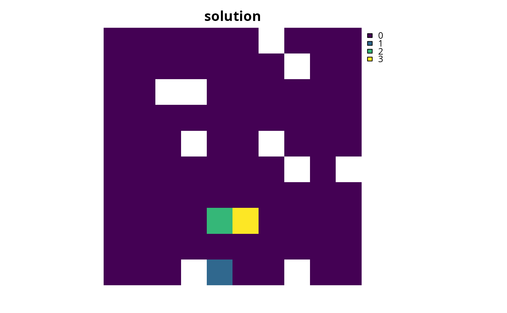

Set the objective of a conservation planning problem() to
represent at least one instance of as many features as possible within a
given budget. This type of objective does not use targets, and feature
weights should be used instead to increase the representation of different
features in solutions.
add_max_cover_objective(x, budget)
Arguments
| x |
|
|---|---|
| budget |
|
Value
Object (i.e. ConservationProblem) with the objective
added to it.
Details
A problem objective is used to specify the overall goal of the conservation planning problem. Please note that all conservation planning problems formulated in the prioritizr package require the addition of objectives---failing to do so will return an error message when attempting to solve problem.
The maximum coverage objective seeks to find the set of planning units that
maximizes the number of represented features, while keeping cost within a
fixed budget. Here, features are treated as being represented if
the reserve system contains at least a single instance of a feature
(i.e. an amount greater than 1). This formulation has often been
used in conservation planning problems dealing with binary biodiversity
data that indicate the presence/absence of suitable habitat
(e.g. Church & Velle 1974). Additionally, weights can be used to favor the
representation of certain features over other features (see
add_feature_weights()). Check out the
add_max_features_objective() for a more
generalized formulation which can accommodate user-specified representation
targets.
This formulation is based on the historical maximum coverage reserve selection formulation (Church & Velle 1974; Church et al. 1996). The maximum coverage objective for the reserve design problem can be expressed mathematically for a set of planning units (\(I\) indexed by \(i\)) and a set of features (\(J\) indexed by \(j\)) as:
$$\mathit{Maximize} \space \sum_{i = 1}^{I} -s \space c_i \space x_i + \sum_{j = 1}^{J} y_j w_j \\ \mathit{subject \space to} \\ \sum_{i = 1}^{I} x_i r_{ij} \geq y_j \times 1 \forall j \in J \\ \sum_{i = 1}^{I} x_i c_i \leq B$$
Here, \(x_i\) is the decisions variable (e.g.
specifying whether planning unit \(i\) has been selected (1) or not
(0)), \(r_{ij}\) is the amount of feature \(j\) in planning
unit \(i\), \(y_j\) indicates if the solution has meet
the target \(t_j\) for feature \(j\), and \(w_j\) is the
weight for feature \(j\) (defaults to 1 for all features; see
add_feature_weights() to specify weights). Additionally,
\(B\) is the budget allocated for the solution, \(c_i\) is the
cost of planning unit \(i\), and \(s\) is a scaling factor used
to shrink the costs so that the problem will return a cheapest solution
when there are multiple solutions that represent the same amount of all
features within the budget.
Notes
In early versions (< 3.0.0.0), the mathematical formulation
underpinning this function was very different. Specifically,
as described above, the function now follows the formulations outlined in
Church et al. (1996). The old formulation is now provided by the
add_max_utility_objective() function.
References
Church RL and Velle CR (1974) The maximum covering location problem. Regional Science, 32: 101--118.
Church RL, Stoms DM, and Davis FW (1996) Reserve selection as a maximum covering location problem. Biological Conservation, 76: 105--112.
See also
Examples
# load data data(sim_pu_raster, sim_pu_zones_stack, sim_features, sim_features_zones) # threshold the feature data to generate binary biodiversity data sim_binary_features <- sim_features thresholds <- raster::quantile(sim_features, probs = 0.95, names = FALSE, na.rm = TRUE) for (i in seq_len(raster::nlayers(sim_features))) sim_binary_features[[i]] <- as.numeric(raster::values(sim_features[[i]]) > thresholds[[i]]) # create problem with maximum utility objective p1 <- problem(sim_pu_raster, sim_binary_features) %>% add_max_cover_objective(500) %>% add_binary_decisions() # \dontrun{ # solve problem s1 <- solve(p1)#> Gurobi Optimizer version 9.0.2 build v9.0.2rc0 (linux64) #> Optimize a model with 6 rows, 95 columns and 120 nonzeros #> Model fingerprint: 0xd891ef4e #> Variable types: 0 continuous, 95 integer (95 binary) #> Coefficient statistics: #> Matrix range [1e+00, 2e+02] #> Objective range [1e-04, 1e+00] #> Bounds range [1e+00, 1e+00] #> RHS range [5e+02, 5e+02] #> Found heuristic solution: objective -0.0000000 #> Presolve removed 6 rows and 95 columns #> Presolve time: 0.00s #> Presolve: All rows and columns removed #> #> Explored 0 nodes (0 simplex iterations) in 0.00 seconds #> Thread count was 1 (of 4 available processors) #> #> Solution count 2: 1.99979 #> #> Optimal solution found (tolerance 1.00e-01) #> Best objective 1.999789559459e+00, best bound 1.999789559459e+00, gap 0.0000%# } # threshold the multi-zone feature data to generate binary biodiversity data sim_binary_features_zones <- sim_features_zones for (z in number_of_zones(sim_features_zones)) { thresholds <- raster::quantile(sim_features_zones[[z]], probs = 0.95, names = FALSE, na.rm = TRUE) for (i in seq_len(number_of_features(sim_features_zones))) { sim_binary_features_zones[[z]][[i]] <- as.numeric( raster::values(sim_features_zones[[z]][[i]]) > thresholds[[i]]) } } # create multi-zone problem with maximum utility objective that # has a single budget for all zones p2 <- problem(sim_pu_zones_stack, sim_binary_features_zones) %>% add_max_cover_objective(800) %>% add_binary_decisions() # \dontrun{ # solve problem s2 <- solve(p2)#> Gurobi Optimizer version 9.0.2 build v9.0.2rc0 (linux64) #> Optimize a model with 106 rows, 285 columns and 1478 nonzeros #> Model fingerprint: 0x68301a72 #> Variable types: 0 continuous, 285 integer (285 binary) #> Coefficient statistics: #> Matrix range [2e-01, 2e+02] #> Objective range [3e-05, 1e+00] #> Bounds range [1e+00, 1e+00] #> RHS range [1e+00, 8e+02] #> Found heuristic solution: objective -0.0000000 #> Presolve removed 0 rows and 67 columns #> Presolve time: 0.01s #> Presolved: 106 rows, 218 columns, 1344 nonzeros #> Variable types: 0 continuous, 218 integer (218 binary) #> Presolved: 106 rows, 218 columns, 1344 nonzeros #> #> #> Root relaxation: objective 9.471221e+00, 29 iterations, 0.00 seconds #> #> Nodes | Current Node | Objective Bounds | Work #> Expl Unexpl | Obj Depth IntInf | Incumbent BestBd Gap | It/Node Time #> #> 0 0 9.47122 0 11 -0.00000 9.47122 - - 0s #> H 0 0 5.9998641 9.47122 57.9% - 0s #> H 0 0 6.9998616 9.47122 35.3% - 0s #> 0 0 9.42563 0 12 6.99986 9.42563 34.7% - 0s #> 0 0 9.41603 0 10 6.99986 9.41603 34.5% - 0s #> 0 0 9.41213 0 12 6.99986 9.41213 34.5% - 0s #> H 0 0 6.9998619 9.41213 34.5% - 0s #> 0 0 9.39313 0 14 6.99986 9.39313 34.2% - 0s #> 0 0 9.35702 0 13 6.99986 9.35702 33.7% - 0s #> H 0 0 6.9998622 9.35702 33.7% - 0s #> 0 0 9.35423 0 13 6.99986 9.35423 33.6% - 0s #> 0 0 9.00669 0 6 6.99986 9.00669 28.7% - 0s #> 0 0 8.99699 0 17 6.99986 8.99699 28.5% - 0s #> 0 0 8.97564 0 15 6.99986 8.97564 28.2% - 0s #> 0 0 8.83544 0 14 6.99986 8.83544 26.2% - 0s #> 0 0 8.83342 0 16 6.99986 8.83342 26.2% - 0s #> 0 0 8.83191 0 17 6.99986 8.83191 26.2% - 0s #> 0 0 8.82227 0 16 6.99986 8.82227 26.0% - 0s #> 0 0 8.63557 0 15 6.99986 8.63557 23.4% - 0s #> 0 0 8.62601 0 14 6.99986 8.62601 23.2% - 0s #> 0 0 8.62498 0 16 6.99986 8.62498 23.2% - 0s #> 0 0 8.62486 0 17 6.99986 8.62486 23.2% - 0s #> 0 0 8.29173 0 18 6.99986 8.29173 18.5% - 0s #> 0 0 8.00714 0 12 6.99986 8.00714 14.4% - 0s #> 0 0 8.00714 0 12 6.99986 8.00714 14.4% - 0s #> 0 0 8.00683 0 12 6.99986 8.00683 14.4% - 0s #> H 0 0 7.9998572 8.00683 0.09% - 0s #> #> Cutting planes: #> Cover: 2 #> MIR: 11 #> #> Explored 1 nodes (244 simplex iterations) in 0.13 seconds #> Thread count was 1 (of 4 available processors) #> #> Solution count 6: 7.99986 6.99986 6.99986 ... -0 #> #> Optimal solution found (tolerance 1.00e-01) #> Best objective 7.999857206152e+00, best bound 8.006834536852e+00, gap 0.0872%# } # create multi-zone problem with maximum utility objective that # has separate budgets for each zone p3 <- problem(sim_pu_zones_stack, sim_binary_features_zones) %>% add_max_cover_objective(c(400, 400, 400)) %>% add_binary_decisions() # \dontrun{ # solve problem s3 <- solve(p3)#> Gurobi Optimizer version 9.0.2 build v9.0.2rc0 (linux64) #> Optimize a model with 108 rows, 285 columns and 1478 nonzeros #> Model fingerprint: 0xbd8c0c6e #> Variable types: 0 continuous, 285 integer (285 binary) #> Coefficient statistics: #> Matrix range [2e-01, 2e+02] #> Objective range [3e-05, 1e+00] #> Bounds range [1e+00, 1e+00] #> RHS range [1e+00, 4e+02] #> Found heuristic solution: objective -0.0000000 #> Presolve removed 2 rows and 69 columns #> Presolve time: 0.01s #> Presolved: 106 rows, 216 columns, 1037 nonzeros #> Variable types: 0 continuous, 216 integer (216 binary) #> Presolve removed 19 rows and 31 columns #> Presolved: 87 rows, 185 columns, 956 nonzeros #> #> #> Root relaxation: objective 8.997455e+00, 14 iterations, 0.00 seconds #> #> Nodes | Current Node | Objective Bounds | Work #> Expl Unexpl | Obj Depth IntInf | Incumbent BestBd Gap | It/Node Time #> #> 0 0 8.99746 0 5 -0.00000 8.99746 - - 0s #> H 0 0 0.9999630 8.99746 800% - 0s #> H 0 0 6.9998278 8.99746 28.5% - 0s #> H 0 0 7.9998255 8.99746 12.5% - 0s #> 0 0 cutoff 0 7.99983 7.99983 0.00% - 0s #> #> Cutting planes: #> Gomory: 3 #> Cover: 4 #> Clique: 1 #> MIR: 2 #> StrongCG: 2 #> #> Explored 1 nodes (36 simplex iterations) in 0.02 seconds #> Thread count was 1 (of 4 available processors) #> #> Solution count 4: 7.99983 6.99983 0.999963 -0 #> #> Optimal solution found (tolerance 1.00e-01) #> Best objective 7.999825481935e+00, best bound 7.999825481935e+00, gap 0.0000%# }